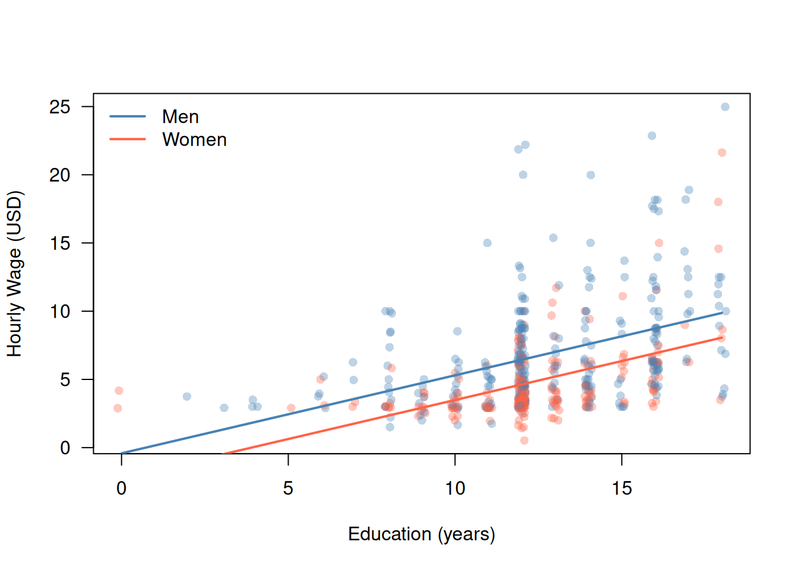
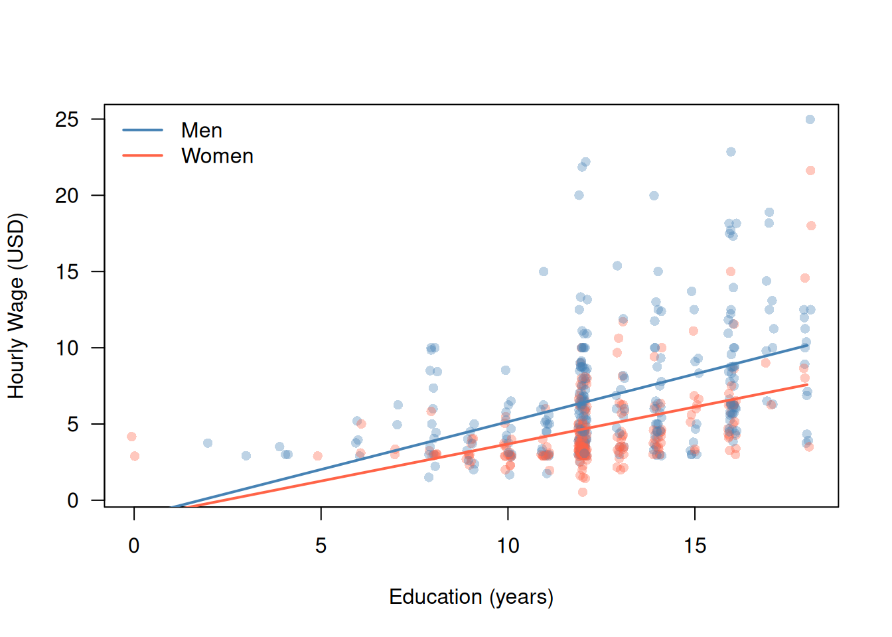

library("wooldridge")
data("wage1")4 Multiple Linear Regression
We continue with the wage1 data from Chapter 3. Since each chapter’s R code runs in its own fresh session, we reload the data:
4.1 Multiple Linear Regression
Education alone leaves much of the variation in wages unexplained: Figure 3.1 shows that workers with the same education earn very different wages. Other factors (work experience, job tenure, gender) clearly matter. Adding them simultaneously serves two goals:
- it improves prediction accuracy (see Section 5.3.1)
- it can correct for bias in the parameter estimate of the education effect (see next chapter)
4.1.1 Why Simple Regression Is Not Enough: Omitted Variable Bias
Compare the OLS estimate of the education coefficient in two models:
lm_simple <- lm(wage ~ educ, data = wage1)
lm_educ_exper <- lm(wage ~ educ + exper, data = wage1)
rbind(
simple = coef(lm_simple)["educ"],
multiple = coef(lm_educ_exper)["educ"]
) educ
simple 0.5413593
multiple 0.6442721The coefficient on educ changes when we add exper. This is not a coincidence — it is omitted variable bias (OVB).
The OVB Formula
Suppose the true model contains two predictors: \[ Y_i = \beta_1 + \beta_2 X_{i2} + \beta_3 X_{i3} + \varepsilon_i, \qquad(4.1)\] with strictly exogenous predictors (Assumption 2) \(X=(1,X_{12},\dots,X_{n2},X_{13},\dots,X_{n3})\) \[ E(\varepsilon_i \mid X) = 0\quad\text{for all}\quad i=1,\dots,n. \]
Parameter of interest. Say the parameter of interest is \(\beta_2\) — the marginal effect of \(X_2\) on the outcome \(Y_i.\)
Estimating a misspecified model. Suppose we guess wrong and leave out \(X_{i3}.\) Instead of the true model (Equation 4.1), we estimate the misspecified simple regression model \[ Y_i = \gamma_1 + \gamma_2 X_{i2} + u_i. \] This violates Assumption 1: we are fitting the wrong (false) linear model.
The crucial question: is the estimator \[ \widehat\gamma_2 = \frac{\displaystyle\frac{1}{n}\sum_{i=1}^{n}(X_{i2} - \bar X_2)(Y_{i} - \bar Y)} {\displaystyle\frac{1}{n}\sum_{i=1}^{n}(X_{i2} - \bar X_2)^2} = \frac{\widehat{\operatorname{Cov}}(X_2,\,Y)}{\widehat{\operatorname{Var}}(X_2)} \] still a reliable estimator of \(\beta_2\)?
After all, we only left out \(X_{i3}\) — and we don’t even care about its effect. The predictor we do care about, \(X_{i2},\) is still in the model. So, what could possibly go wrong?!
The sample decomposition. The estimator \(\widehat\gamma_2\) decomposes into the multiple-regression slope \(\widehat\beta_2\) plus an empirical bias term: \[ \widehat{\gamma}_2 = \widehat{\beta}_2 + \underbrace{\widehat{\beta}_3 \cdot \widehat\delta}_{\text{empirical bias}}, \qquad(4.2)\] where:
- \(\widehat\beta_2\) and \(\widehat\beta_3\) are the OLS estimators from the true multiple regression (Equation 4.1), and
- \(\widehat\delta\) is the OLS slope of the auxiliary regression \(X_{i3} = \alpha + \delta X_{i2} + e_i,\) i.e. regressing the omitted predictor \(X_{i3}\) on the included predictor \(X_{i2}\colon\) \[ \widehat\delta = \frac{\displaystyle\frac{1}{n}\sum_{i=1}^{n}(X_{i2} - \bar X_2)(X_{i3} - \bar X_3)} {\displaystyle\frac{1}{n}\sum_{i=1}^{n}(X_{i2} - \bar X_2)^2} = \frac{\widehat{\operatorname{Cov}}(X_2,\,X_3)}{\widehat{\operatorname{Var}}(X_2)}. \qquad(4.3)\]
Going Deeper: Derivation of the Sample Decomposition Equation 4.2
Step 1: Start from the definition of \(\widehat\gamma_2,\) and substitute \(Y_i\). \[ \widehat\gamma_2 = \frac{\widehat{\operatorname{Cov}}(X_2,\,Y)}{\widehat{\operatorname{Var}}(X_2)}. \] The fitted values of the multiple regression satisfy \[ Y_i = \widehat\beta_1 + \widehat\beta_2 X_{i2} + \widehat\beta_3 X_{i3} + \widehat\varepsilon_i. \] Step 2: Expand the covariance. Plugging this in for \(Y\) and using the linearity of the (sample) covariance, \[\begin{align*} \widehat\gamma_2 &= \frac{\widehat{\operatorname{Cov}}\bigl(X_2,\,\widehat\beta_1 + \widehat\beta_2 X_2 + \widehat\beta_3 X_3 + \widehat\varepsilon\bigr)}{\widehat{\operatorname{Var}}(X_2)}\\[2ex] &\text{using the linearity of the sample covariance:}\\[2ex] &= \frac{ \widehat{\operatorname{Cov}}\bigl(X_2,\,\widehat\beta_1\bigr) + \widehat{\operatorname{Cov}}\bigl(X_2,\,\widehat\beta_2 X_2\bigr) + \widehat{\operatorname{Cov}}\bigl(X_2,\,\widehat\beta_3 X_3\bigr) + \widehat{\operatorname{Cov}}\bigl(X_2,\,\widehat\varepsilon\bigr)}{\widehat{\operatorname{Var}}(X_2)}\\[2ex] &\text{factoring out factors that do not vary accross $i=1,\dots,n\colon$}\\[2ex] &= \frac{ \widehat\beta_1 \,\widehat{\operatorname{Cov}}\bigl(X_2,\,1\bigr)+ \widehat\beta_2 \,\widehat{\operatorname{Cov}}\bigl(X_2,\,X_2\bigr) + \widehat\beta_3 \,\widehat{\operatorname{Cov}}\bigl(X_2,\,X_3\bigr) + \widehat{\operatorname{Cov}}\bigl(X_2,\,\widehat\varepsilon\bigr)}{\widehat{\operatorname{Var}}(X_2)}\\[2ex] &= \frac{0+\widehat\beta_2\,\widehat{\operatorname{Var}}(X_2) + \widehat\beta_3\,\widehat{\operatorname{Cov}}(X_2,\,X_3) + 0}{\widehat{\operatorname{Var}}(X_2)} \end{align*}\] using that:
- \(\widehat{\operatorname{Cov}}(X_2,\, 1) = 0\)
- \(\widehat{\operatorname{Cov}}(X_2,X_2) = \widehat{\operatorname{Var}}(X_2)\).
- \(\widehat{\operatorname{Cov}}(X_2,\,\widehat\varepsilon)=0,\) since by the orthogonal projection property of OLS: \[\begin{align*} \widehat{\operatorname{Cov}}(X_2,\,\widehat\varepsilon) & = \frac{1}{n}\sum_{i=1}^n (X_{i2}-\bar X_2)\,\widehat\varepsilon_i\\[2ex] & = \frac{1}{n}\Bigl(\underbrace{\textstyle\sum_{i=1}^n X_{i2}\widehat\varepsilon_i}_{=0} - \bar X_2\underbrace{\textstyle\sum_{i=1}^n \widehat\varepsilon_i}_{=0}\Bigr)\\[2ex] & = 0. \end{align*}\]
Step 3: Simplify.
\[\begin{align*} \widehat\gamma_2 &= \frac{0+\widehat\beta_2\,\widehat{\operatorname{Var}}(X_2) + \widehat\beta_3\,\widehat{\operatorname{Cov}}(X_2,\,X_3) + 0}{\widehat{\operatorname{Var}}(X_2)}\\[2ex] &= \widehat\beta_2 + \widehat\beta_3\, \underbrace{\frac{\widehat{\operatorname{Cov}}(X_2,\,X_3)}{\widehat{\operatorname{Var}}(X_2)}}_{=\widehat{\delta}}. \end{align*}\]
That is, the estimator \(\widehat{\gamma}_2\) equals the estimator \(\widehat{\beta}_2\) plus a potential bias term \(\widehat\beta_3\,\widehat{\delta}.\)
That is: \(\widehat{\gamma}_2\) (misspecified model) and \(\widehat{\beta}_2\) (true model) are connected — but with a potential empirical bias term \(\widehat{\beta}_3\,\widehat{\delta}\) attached.
In our wage1 data, the sample decomposition Equation 4.2 is given by: \[
\underbrace{0.541}_{\widehat\gamma_2}
= \underbrace{0.644}_{\widehat\beta_2}
+ \underbrace{0.070}_{\widehat\beta_3}
\cdot \underbrace{(-1.468)}_{\widehat\delta}.
\]
R Code to Reproduce the Omitted Variable Bias Decomposition
## delta_hat = sample covariance / sample variance (formula above)
delta_hat <- cov(wage1$educ, wage1$exper) / var(wage1$educ)
beta3_hat <- coef(lm_educ_exper)["exper"]
c(delta_hat = unname(delta_hat),
beta3_hat = unname(beta3_hat),
bias = unname(beta3_hat * delta_hat),
educ_2_mult = unname(coef(lm_educ_exper)["educ"]),
educ_2_mult_p_bias = unname(coef(lm_educ_exper)["educ"] + beta3_hat * delta_hat),
educ_2_simple = unname(coef(lm_simple)["educ"])) delta_hat beta3_hat bias educ_2_mult
-1.4681823 0.0700954 -0.1029128 0.6442721
educ_2_mult_p_bias educ_2_simple
0.5413593 0.5413593 However, a single realization of \(\widehat{\gamma}_2\) cannot tell us whether it is a reliable estimator of \(\beta_2.\)
We call \(\widehat{\gamma}_2\) a reliable estimator of \(\beta_2\) if it is unbiased — i.e., if its expected value equals \(\beta_2\): \[\begin{align*} E(\widehat{\gamma}_2\mid X) & \neq \beta_2\quad \text{biased, unreliable estimator}\\[2ex] E(\widehat{\gamma}_2\mid X) & = \beta_2\quad \text{unbiased, reliable estimator} \end{align*}\]
It turns out that, in general, the conditional mean of \(\widehat{\gamma}_2\) given \(X = (X_{12}, \dots, X_{n2},\; X_{13}, \dots, X_{n3})\) is not equal to \(\beta_2\): \[ E(\widehat\gamma_2 \mid X) = \beta_2 + \underbrace{\beta_3 \cdot \widehat\delta}_{\text{bias}}, \qquad(4.4)\]
Going Deeper: Derivation of the OVB Formula Equation 4.4
Take the conditional expectation of the sample decomposition Equation 4.2. Since \(\widehat\delta\) depends only on the predictor values \(X_{i2}, X_{i3}\) (and is hence non-random given \(X\)), \[\begin{align*} E(\widehat\gamma_2 \mid X) &= E\bigl(\widehat\beta_2 + \widehat\beta_3\,\widehat\delta \mid X\bigr)\\[2ex] &= E(\widehat\beta_2\mid X) + E(\widehat\beta_3\mid X)\,\widehat\delta. \end{align*}\]
Because the true model Equation 4.1 satisfies strict exogeneity, \(E(\varepsilon_i\mid X)=0\), the multiple-regression OLS estimators \(\widehat\beta_2\) and \(\widehat\beta_3\) are unbiased for the true \(\beta_2\) and \(\beta_3\) — exactly as in Section 3.2.4, now with two predictors instead of one (proven in general in Section 4.1.3): \[ E(\widehat\beta_2\mid X) = \beta_2 \qquad\text{and}\qquad E(\widehat\beta_3\mid X) = \beta_3. \]
Plugging this in gives Equation 4.4: \[ E(\widehat\gamma_2 \mid X) = \beta_2 + \beta_3\,\widehat\delta. \qquad \blacksquare \]
The bias is non-zero whenever
- \(\beta_3 \neq 0\): the omitted variable affects \(Y\), and
- \(\widehat\delta \neq 0\): the omitted variable is correlated with the included predictor \(X_{i2}\) in the sample, \[ \widehat{\operatorname{Cov}}(X_2,\,X_3) \neq 0. \]
In the wages example, with
- \(X_{i2} = \text{educ}_i\)
- \(X_{i3} = \text{exper}_i\),
we have:
- Experience raises wages, thus \(\beta_3 > 0.\)
- Workers who spent more years in school have fewer years of work experience, so \(\widehat{\operatorname{Cov}}(X_2,\,X_3)<0\) and thus \(\widehat\delta < 0\).
Thus, we expect \(\widehat\gamma_2\) to be negatively biased for \(\beta_2\): \[
E(\widehat\gamma_2 \mid X) = \beta_2 + \underbrace{\beta_3 \cdot \widehat\delta}_{<0}.
\] The misspecified estimator \(\widehat\gamma_2\) will systematically understate the true return to education, \(\beta_2.\) Omitting the experience variable \(X_{i3}=\)exper\(_i\) is therefore a fundamental problem for estimating \(\beta_2.\)
Business Takeaway: Which Variables Are in the Model Matters
The estimated education coefficient moved from 0.54 to 0.64 just by adding experience. Whenever someone presents a regression result (a consultant, a colleague, a dashboard, etc) ask:
“What else could drive both the predictor of interest (e.g. \(X_{i2}\)) and the outcome \(Y_i\), and is it in the model?”
OVB is a causal problem, not a mechanical one. Including additional control variables reduces bias only if those variables are themselves exogenous. Adding a “bad control”, i.e., a variable that is affected by \(X_{i2},\) can introduce new bias. We return to this in Section 5.4.
4.1.2 The Multiple Linear Regression Model
The multiple linear regression model with \(K\) parameters (an intercept and \(K-1\) predictors) is
\[ Y_i = \beta_1 + \beta_2 X_{i2} + \dots + \beta_K X_{iK} + \varepsilon_i, \quad i = 1, \dots, n. \qquad(4.5)\]
For instance, the model with education, experience, and tenure has \(K = 4\) parameters:
\[ \text{wage}_i = \beta_1 + \beta_2\,\text{educ}_i + \beta_3\,\text{exper}_i + \beta_4\,\text{tenure}_i + \varepsilon_i. \]
The multiple linear regression model Equation 4.5 specifies the conditional mean of \(Y_i\) given \(X_{i2} = x_2, \dots, X_{iK} = x_K\) as a linear function \[\begin{align*} &m(x_2, \dots, x_K)\\[2ex] & = E(Y_i \mid X_{i2} = x_2, \dots, X_{iK} = x_K) \\[2ex] & = E(\beta_1 + \beta_2 X_{i2} + \dots + \beta_K X_{iK} + \varepsilon_i \mid X_{i2} = x_2, \dots, X_{iK} = x_K) \\[2ex] & = \beta_1 + \beta_2 x_2 + \dots + \beta_K x_K + \underbrace{E(\varepsilon_i \mid X_{i2} = x_2, \dots, X_{iK} = x_K)}_{=0} \\[2ex] & = \beta_1 + \beta_2 x_2 + \dots + \beta_K x_K, \end{align*}\] where the error term drops out by (strict) exogeneity; see the assumptions below.
Interpretation of \(\beta_k\). Each slope \(\beta_k\), \(k = 2, \dots, K\), equals the partial derivative of the conditional mean function \(m(x_2, \dots, x_K)\) with respect to \(x_k\):
\[\begin{align*} &\frac{\partial}{\partial x_k} m(x_2, \dots, x_K)\\[2ex] & = \frac{\partial}{\partial x_k} E(Y_i \mid X_{i2} = x_2, \dots, X_{iK} = x_K) \\[2ex] & = \frac{\partial}{\partial x_k} \left(\beta_1 + \beta_2 x_2 + \dots + \beta_k x_k + \dots + \beta_K x_K\right) \\[2ex] & = \beta_k. \end{align*}\]
In words: a one-unit increase in \(X_{ik}\) changes the expected value of \(Y_i\) by \(\beta_k\) units, holding all other predictors constant. That is why \(\beta_k\) is called a partial effect. In the wages example with education, experience, and tenure, \(\beta_2\) measures the expected wage premium per additional year of schooling, in dollars per hour, for workers with the same experience and tenure.
The OLS estimator \(\widehat\beta = (\widehat\beta_1, \dots, \widehat\beta_K)\) has desirable statistical properties under four assumptions.
Assumption 1: Linear Model and Random Sampling
The data \((Y_1, X_{12}, \dots, X_{1K}), \dots, (Y_n, X_{n2}, \dots, X_{nK})\) are a realization of an (i.i.d.) random sample from the multiple linear regression model Equation 4.5.
Assumption 2: Strict Exogeneity
\[ E(\varepsilon_i \mid X) = 0, \quad i = 1, \dots, n, \] where \(X=(X_{12},\dots,X_{nK})\) contains all predictor values \(X_{i2}, \dots, X_{iK}\) of all workers \(i = 1, \dots, n\). Worker \(i\)’s error \(\varepsilon_i\) has mean zero regardless of everyone’s predictor values — not only worker \(i\)’s own.
Assumption 3: No Perfect Multicollinearity
\[ \operatorname{rank}(X) = K. \]
No predictor may be an exact linear combination of the other predictors (including the intercept) — otherwise the columns of \(X\) are linearly dependent, \(\operatorname{rank}(X) < K\), and the estimator \(\widehat\beta\) is not uniquely defined. For example, we cannot include both a dummy female and a dummy male $= 1 - $female together with an intercept — the data could not tell their effects apart.
Assumption 4: Homoskedasticity
\[ \operatorname{Var}(\varepsilon_i \mid X) = \sigma^2 \quad\text{for all}\quad i = 1, \dots, n. \]
The variance of the error is constant across all predictor values.
4.1.3 OLS Estimation
The OLS estimator chooses \(\widehat\beta_1, \dots, \widehat\beta_K\) to minimize the sum of squared deviations
\[ (\widehat\beta_1, \dots, \widehat\beta_K) = \arg\min_{b_1, \dots, b_K} \sum_{i=1}^{n} \bigl(Y_i - b_1 - b_2 X_{i2} - \dots - b_K X_{iK}\bigr)^2. \qquad(4.6)\]
With several predictors, there is no longer a short formula like Equation 3.3 that one would compute by hand. lm() solves the minimization problem for us:
(Intercept) educ exper tenure
-2.87273482 0.59896507 0.02233952 0.16926865 Interpretation: Controlling for experience and tenure, each additional year of education is associated with approximately 0.6 dollars/hour higher wages.
Business Takeaway: Reading a Coefficient
“Controlling for experience and tenure” means comparing workers who are alike in these respects. An HR analyst can report: “Among employees with the same experience and tenure, those with one more year of education earn on average $0.60 more per hour.”
❗ The coefficient does not say that paying for an employee’s extra year of schooling will raise their wage by this amount — that is a causal claim, which we examine in Section 5.4.
Going Deeper: OLS in Matrix Form
This box requires matrix algebra; see Appendix A for a refresher.
Set \(X_{i1} = 1\) for the intercept and stack all \(n\) observations:
\[ \underset{(n\times 1)}{Y} = \underset{(n\times K)}{X}\; \underset{(K\times 1)}{\beta} + \underset{(n\times 1)}{\varepsilon}, \] \[ Y = \begin{pmatrix}Y_1\\\vdots\\Y_n\end{pmatrix},\; X = \begin{pmatrix} 1 & X_{12} & \cdots & X_{1K}\\ \vdots & \vdots & \ddots & \vdots\\ 1 & X_{n2} & \cdots & X_{nK} \end{pmatrix},\; \beta = \begin{pmatrix}\beta_1\\\vdots\\\beta_K\end{pmatrix}. \]
The sum of squares in Equation 4.6 becomes \[ \widehat\beta = \begin{pmatrix} \widehat\beta_1\\\vdots\\\widehat\beta_K \end{pmatrix} = \arg\min_{b\in\mathbb{R}^K}(Y - Xb)^\top(Y - Xb). \]
Setting its gradient to zero gives the normal equations \[ X^\top X\,\widehat\beta = X^\top Y. \] No perfect multicollinearity means \[ \operatorname{rank}(X) = K, \] so the \((K\times K)\)-matrix \[ X^\top X \] is invertible and \[ \widehat\beta = (X^\top X)^{-1} X^\top Y. \qquad(4.7)\]
The fitted values are \[ \widehat Y = X\widehat\beta = HY \] with the \((n \times n)\) projection matrix (hat matrix) \[ H = X(X^\top X)^{-1}X^\top. \] Its diagonal elements \(h_{ii}\) are leverage statistics: a large \(h_{ii}\) means observation \(i\) has unusual predictor values and thus a potentially large influence on \(\widehat\beta.\)
We can verify Equation 4.7 in R:
X <- model.matrix(lm_multiple)
Y <- wage1$wage
beta_hat <- solve(t(X) %*% X) %*% t(X) %*% Y
round(cbind(beta_by_hand = beta_hat,
beta_by_R = coef(lm_multiple)), 4) beta_by_R
(Intercept) -2.8727 -2.8727
educ 0.5990 0.5990
exper 0.0223 0.0223
tenure 0.1693 0.1693Under Assumptions 1–4, \(\operatorname{Var}(\widehat\beta \mid X) = \sigma^2 (X^\top X)^{-1}\); the standard errors reported by summary() are the square roots of the diagonal elements of \[
\widehat\sigma^2 (X^\top X)^{-1}.
\]
Proof: \(\operatorname{Var}(\widehat\beta \mid X) = \sigma^2 (X^\top X)^{-1}\)
Step 1: Write \(\widehat\beta\) in terms of the errors. By the rank condition, \(X^\top X\) is invertible. Plugging the model \(Y = X\beta + \varepsilon\) (Assumption 1) into Equation 4.7 gives \[\begin{align*} \widehat\beta & = (X^\top X)^{-1} X^\top (X\beta + \varepsilon) \\[2ex] & = \underbrace{(X^\top X)^{-1} X^\top X}_{= I_K}\,\beta + (X^\top X)^{-1} X^\top \varepsilon \\[2ex] & = \beta + (X^\top X)^{-1} X^\top \varepsilon. \end{align*}\]
Step 2: The conditional mean. Given \(X\), the matrix \((X^\top X)^{-1} X^\top\) is fixed, so by strict exogeneity (Assumption 2), \(E(\varepsilon \mid X) = 0\), \[ E(\widehat\beta \mid X) = \beta + (X^\top X)^{-1} X^\top E(\varepsilon \mid X) = \beta. \] (This also proves that the OLS estimators are unbiased.)
Step 3: The conditional variance. By definition and Steps 1–2, \[\begin{align*} \operatorname{Var}(\widehat\beta \mid X) & = E\bigl[(\widehat\beta - \beta)(\widehat\beta - \beta)^\top \mid X\bigr] \\[2ex] & = E\bigl[(X^\top X)^{-1} X^\top \varepsilon\,\varepsilon^\top X (X^\top X)^{-1} \mid X\bigr] \\[2ex] & = (X^\top X)^{-1} X^\top \, E(\varepsilon\,\varepsilon^\top \mid X) \, X (X^\top X)^{-1}. \end{align*}\] In the second line we used \(\bigl((X^\top X)^{-1} X^\top \varepsilon\bigr)^\top = \varepsilon^\top X (X^\top X)^{-1}\), since \(X^\top X\) is symmetric.
Step 4: The \((n \times n)\) matrix \(E(\varepsilon\,\varepsilon^\top \mid X)\). Its elements are \(E(\varepsilon_i \varepsilon_j \mid X)\).
- Diagonal (\(i = j\)): since \(E(\varepsilon_i \mid X) = 0\), \(E(\varepsilon_i^2 \mid X) = \operatorname{Var}(\varepsilon_i \mid X) = \sigma^2\) by homoskedasticity (Assumption 4).
- Off-diagonal (\(i \neq j\)): under random sampling (Assumption 1), worker \(i\)’s data are independent of worker \(j\)’s data, so \(E(\varepsilon_i \varepsilon_j \mid X) = E(\varepsilon_i \mid X)\, E(\varepsilon_j \mid X) = 0 \cdot 0 = 0\).
Hence \[ E(\varepsilon\,\varepsilon^\top \mid X) = \sigma^2 I_n. \]
Step 5: Put everything together. Plugging Step 4 into Step 3, \[\begin{align*} \operatorname{Var}(\widehat\beta \mid X) & = (X^\top X)^{-1} X^\top \, \sigma^2 I_n \, X (X^\top X)^{-1} \\[2ex] & = \sigma^2 \, \underbrace{(X^\top X)^{-1} X^\top X}_{= I_K} \, (X^\top X)^{-1} \\[2ex] & = \sigma^2 (X^\top X)^{-1}. \qquad \blacksquare \end{align*}\]
4.1.4 Properties and Robust Standard Errors
Unbiasedness. Under Assumptions 1–3, the OLS estimators are unbiased: \(E(\widehat\beta_k) = \beta_k\) for every \(k = 1, \dots, K\).
Standard errors. Under Assumptions 1–4, the variance-covariance matrix of \(\widehat\beta\) is \(\sigma^2 (X^\top X)^{-1}\) (see the box above). The standard errors reported by summary() are the square roots of its diagonal elements, with the error variance estimated by \(\widehat\sigma^2 = \frac{1}{n-K}\sum_{i=1}^n\widehat\varepsilon_i^2\). These standard errors crucially rely on Assumption 4 (homoskedasticity). The scatter plot in Figure 3.1 suggests that this assumption is violated: the spread of wages increases with education.
Heteroskedasticity. If the error variance \(\operatorname{Var}(\varepsilon_i \mid X) = \sigma_i^2\) differs across workers, the homoskedastic formula \(\sigma^2 (X^\top X)^{-1}\) no longer holds; the true variance takes the more general sandwich form given in the box below.
Using the homoskedastic standard errors although the errors are heteroskedastic leads to
- wrong standard errors, and thus to
- wrong \(t\)-statistics,
- wrong \(p\)-values, and
- wrong confidence intervals
rendering inference unreliable.
Using heteroskedasticity-robust standard errors although the errors are actually homoskedastic is harmless: it still leads to (at least approximately, for large \(n\))
- valid standard errors, and thus to
- valid \(t\)-statistics,
- valid \(p\)-values, and
- valid confidence intervals.
The price is a loss of precision: robust standard errors are estimated less precisely than the usual ones, which matters mainly in small samples (smallish \(n\)).
Heteroskedasticity-Robust Standard Errors
The sandwich variance (box below) is not directly computable, since the \(\sigma_i^2\) are unknown. Replacing each \(\sigma_i^2\) by the squared residual \(\widehat\varepsilon_i^2\) gives the so-called HC0 heteroskedasticity-robust variance estimator. There are several refinements of this idea; the most commonly used, HC3, slightly inflates the squared residuals to improve small-sample behavior.
According to Long and Ervin (2000), HC3 has the best finite-sample performance. The R packages sandwich and lmtest compute it for us:
suppressPackageStartupMessages(library("sandwich"))
suppressPackageStartupMessages(library("lmtest"))
## HC3 heteroskedasticity-robust standard error
coeftest(lm_multiple,
vcov = vcovHC(lm_multiple, type = "HC3"))
t test of coefficients:
Estimate Std. Error t value Pr(>|t|)
(Intercept) -2.872735 0.819016 -3.5075 0.0004913 ***
educ 0.598965 0.061860 9.6826 < 2.2e-16 ***
exper 0.022340 0.010663 2.0950 0.0366507 *
tenure 0.169269 0.029854 5.6698 2.368e-08 ***
---
Signif. codes: 0 '***' 0.001 '**' 0.01 '*' 0.05 '.' 0.1 ' ' 1In applied work, always report HC3 robust standard errors. The coefficient estimates \(\widehat\beta_k\) are unchanged; only standard errors, \(t\)-statistics, and confidence intervals are affected.
Going Deeper: The Sandwich Formula
This box requires matrix algebra; see Appendix A.
In matrix notation (see the box in Section 4.1.3), the variance of \(\widehat\beta\) under heteroskedasticity has the sandwich form
\[ \operatorname{Var}(\widehat\beta \mid X) = (X^\top X)^{-1} \Bigl(\sum_{i=1}^n \sigma_i^2\, X_i X_i^\top\Bigr) (X^\top X)^{-1}, \qquad(4.8)\]
where \(X_i = (1, X_{i2}, \dots, X_{iK})^\top\).
- Under homoskedasticity it simplifies to \(\sigma^2 (X^\top X)^{-1}\).
- The HC0 estimator replaces each unknown \(\sigma_i^2\) by the squared residual \(\widehat\varepsilon_i^2\).
- The HC3 estimator instead replaces \(\sigma_i^2\) by \(\widehat{\varepsilon}_i^2/(1-h_{ii})^2\), where \(h_{ii}\) is the leverage of observation \(i\) — a small-sample correction that inflates the residuals of high-leverage observations.
4.1.5 Statistical Inference
\(t\)-Tests for Individual Coefficients
Each coefficient \(\beta_k\), \(k = 1, \dots, K\), can be tested individually. To test \[\begin{align*} &H_0\colon \beta_k = 0\\[2ex] \text{vs.}\quad &H_1\colon \beta_k \neq 0, \end{align*}\] we use the \(t\)-statistic \[ T_k = \frac{\widehat\beta_k - 0}{\widehat{\operatorname{SE}}(\widehat\beta_k \mid X)} \overset{H_0}{\sim} t_{n-K} \qquad(4.9)\] under \(H_0\), Assumptions 1–4, and normally distributed errors. The \(t\)-distribution has \(n - K\) degrees of freedom: we lose one for each of the \(K\) estimated parameters, including the intercept. Without normality, this distribution holds only approximately, for large \(n\) (Central Limit Theorem).
We reject \(H_0\) at level \(\alpha\) when \(T_k\) is incompatible with the null hypothetical \(t_{n-K}\)-distribution, i.e., when \(T_k\) falls outside the critical values \(\pm t_{n-K,\,1-\alpha/2}\): \[ |T_k| > t_{n-K,\,1-\alpha/2}. \]
\(t\)-Tests with Robust Standard Errors
If we use the recommended heteroskedasticity-robust HC3 standard errors \[ T_k = \frac{\widehat\beta_k - 0}{\widehat{\operatorname{SE}}_{\operatorname{HC3}}(\widehat\beta_k \mid X)} \] the \(t_{n-K}\)-distribution is no longer exact, even under normal errors. It remains, however, a valid distributional approximation for large \(n\), due to the Central Limit Theorem.
Example: In the model with education, experience, and tenure \((K = 4)\), we test \[\begin{align*} &H_0\colon \beta_3 = 0\quad \text{(no partial effect of experience)}\\[2ex] \text{vs.}\quad &H_1\colon \beta_3 \neq 0 \end{align*}\] using HC3 standard errors. We construct the observed value of the \(t\)-statistic step by step:
Estimate the coefficient. The OLS estimate of \(\beta_3\) is \[ \widehat\beta_{3,\operatorname{obs}} = 0.0223. \]
Estimate its standard error. The HC3 standard error is the square root of the corresponding diagonal element of the HC3 variance matrix (see Section 4.1.4): \[ \widehat{\operatorname{SE}}_{\operatorname{HC3}}(\widehat\beta_3 \mid X)_{\operatorname{obs}} = 0.0107. \]
Compute the observed \(t\)-statistic. \[\begin{align*} T_{3,\operatorname{obs}} &= \frac{\widehat\beta_{3,\operatorname{obs}} - 0}{\widehat{\operatorname{SE}}_{\operatorname{HC3}}(\widehat\beta_3 \mid X)_{\operatorname{obs}}} \\[2ex] &= \frac{0.0223 - 0}{0.0107} \\[2ex] &= 2.10. \end{align*}\]
Compare with the critical value. Since \[\begin{align*} |T_{3,\operatorname{obs}}| = 2.10 > t_{n-K,\,0.975} &= t_{522,\,0.975}\\[2ex] &= 1.965, \end{align*}\] \(T_{3,\operatorname{obs}}\) is incompatible with \(H_0\), and we reject \(H_0\colon \beta_3 = 0\) at the \(5\%\) level. The same conclusion follows from the \(p\)-value, \[ p_{\operatorname{obs}} = 0.037 < 0.05. \]
## HC3 variance matrix
V_HC3 <- vcovHC(lm_multiple, type = "HC3")
## Step 1
beta3_hat_obs <- coef(lm_multiple)["exper"]
## Step 2
SE_beta3_HC3_obs <- sqrt(diag(V_HC3))["exper"]
## Step 3
T3_obs <- (beta3_hat_obs - 0) / SE_beta3_HC3_obs
c(beta3_hat_obs = unname(beta3_hat_obs),
SE_beta3_HC3_obs = unname(SE_beta3_HC3_obs),
T3_obs = unname(T3_obs)) beta3_hat_obs SE_beta3_HC3_obs T3_obs
0.02233952 0.01066316 2.09501806 ## All in one step (incl. p-value):
coeftest(lm_multiple, vcov = V_HC3)["exper", ] Estimate Std. Error t value Pr(>|t|)
0.02233952 0.01066316 2.09501806 0.03665071
The Choice of Standard Errors Can Change the Conclusion
With the usual non-robust standard error from summary(), \[
\widehat{\operatorname{SE}}(\widehat\beta_3 \mid X)_{\operatorname{obs}} = 0.0121,
\] we would get \(T_{3,\operatorname{obs}} = 1.85\) (\(p_{\operatorname{obs}} = 0.064\)) and would fail to reject \(H_0.\)
Here, the HC3 standard error is smaller than the usual one: robust standard errors are not always larger.
Since the scatter plot in Figure 3.1 points to heteroskedasticity, the HC3-based test is the one to report.
\(F\)-Test for Joint Significance
To test whether a group of \(q\) predictors jointly matters, we use the \(F\)-test.
Example: Does the region matter? The wage1 data contain three binary (dummy) variables for the region a worker lives in:
-
northcen\(= 1\) if the worker lives in the north-central U.S., and \(= 0\) otherwise, -
south\(= 1\) if the worker lives in the South, and \(= 0\) otherwise, and -
west\(= 1\) if the worker lives in the West, and \(= 0\) otherwise.
For instance, \(\text{northcen}_i = 1\) means that worker \(i\) lives in the north-central region, and \(\text{northcen}_i = 0\) means that worker \(i\) does not live there. Workers in the fourth region, the Northeast, have all three dummies equal to zero. They serve as the reference group: a separate dummy for the Northeast is left out of the model to avoid perfect multicollinearity (see Section 4.1.6 for more on binary predictors).
We add the three region dummies to the model with education, experience, and tenure: \[ \begin{aligned} Y_i = \beta_1 &+ \beta_2\,\text{educ}_i + \beta_3\,\text{exper}_i + \beta_4\,\text{tenure}_i \\ &+ \beta_5\,\text{northcen}_i + \beta_6\,\text{south}_i + \beta_7\,\text{west}_i + \varepsilon_i. \end{aligned} \]
lm_region <- lm(wage ~ educ + exper + tenure + northcen + south + west,
data = wage1)
## t-tests with HC3 standard errors
coeftest(lm_region,
vcov = vcovHC(lm_region, type = "HC3"))[c("northcen", "south", "west"), ] Estimate Std. Error t value Pr(>|t|)
northcen -0.6567425 0.4103033 -1.6006268 0.1100681
south -0.4918371 0.3722884 -1.3211184 0.1870440
west 0.4664741 0.4895435 0.9528756 0.3410967None of the three region coefficients is individually significant at the \(5\%\) level: all \(p\)-values of the individual \(t\)-tests (with HC3 standard errors) exceed \(0.05\).
Does this mean that the region does not matter? Not necessarily! The question
“Does the region matter at all?”
is a joint hypothesis about all three coefficients: \[\begin{align*} &H_0\colon \beta_5 = \beta_6 = \beta_7 = 0\quad\text{(the region does not matter)}\\[2ex] \text{vs.}\quad &H_1\colon \text{at least one of } \beta_5, \beta_6, \beta_7 \text{ is } \neq 0, \end{align*}\] with \(q = 3\) restrictions (three coefficients set to zero).
The idea of the \(F\)-test is to compare two models:
- the unrestricted model with all \(K\) parameters (here: \(K = 7\)), against
- the restricted model, in which the \(q\) coefficients under \(H_0\) are set to zero (here: the model without the region dummies).
If \(H_0\) is true, dropping the \(q\) predictors should increase the sum of squared residuals only a little. The \(F\)-statistic measures this increase, relative to the unexplained variation of the unrestricted model: \[ F = \frac{\frac{1}{q}\Bigl(\sum_{i=1}^{n}\widehat\varepsilon_{i,\text{restr}}^2 - \sum_{i=1}^{n}\widehat\varepsilon_{i}^2\Bigr)} {\frac{1}{n-K}\sum_{i=1}^{n}\widehat\varepsilon_i^2} \overset{H_0}{\sim} F_{q,\;n-K} \qquad(4.10)\] under \(H_0\), Assumptions 1–4, and normally distributed errors, where
- \(F_{q,\;n-K}\) denotes the \(F\)-distribution with \(q\) numerator and \(n-K\) denominator degrees of freedom (Section 2.6.3),
- \(\widehat\varepsilon_{i,\text{restr}}\) are the residuals of the restricted model, and
- \(\widehat\varepsilon_i\) are the residuals of the unrestricted model.
Large values of \(F\) are incompatible with \(H_0\): we reject \(H_0\) if \[ F_{\operatorname{obs}} > F_{q,\,n-K,\,1-\alpha}, \] where \(F_{q,\,n-K,\,1-\alpha}\) denotes the \((1-\alpha)\)-quantile of the \(F_{q,\,n-K}\)-distribution.
Unlike the \(t\)-statistic \(T\), the \(F\)-statistic cannot be negative, so only large values count against \(H_0.\)
Robust \(F\)-test. Like the usual standard errors, the \(F\)-statistic in Equation 4.10 assumes homoskedastic errors. Since the wage data are heteroskedastic, we use its heteroskedasticity-robust (HC3) version instead — consistent with the HC3-based \(t\)-tests above. The robust \(F\)-statistic measures the same thing (how strongly the data contradict the \(q\) restrictions under \(H_0\)), but it is computed from the HC3 variance matrix of the estimated coefficients; see the “Going Deeper” box below.
Under \(H_0\), the robust version of the \(F\)-statistic is approximately \(F_{q,\,n-K}\)-distributed for large \(n\), and the decision rule stays the same.
Going Deeper: The Robust \(F\)-Statistic
This box requires matrix algebra; see Appendix A.
Collect the \(q\) coefficients under test in the vector \(\theta\) (here: \(\theta = (\beta_5, \beta_6, \beta_7)^\top\)), so that \(H_0\colon \theta = 0\). Let \(\widehat\theta\) be their OLS estimates and \(\widehat V_{\operatorname{HC3}}\) the corresponding \((q \times q)\) block of the HC3 variance matrix of \(\widehat\beta\). The robust \(F\)-statistic is \[ F_{\operatorname{HC3}} = \frac{1}{q}\, \widehat\theta^\top \, \widehat V_{\operatorname{HC3}}^{-1} \, \widehat\theta. \] For \(q = 1\), it reduces to the square of the robust \(t\)-statistic, \(F_{\operatorname{HC3}} = T_{\operatorname{HC3}}^2\).
theta_hat <- coef(lm_region)[c("northcen", "south", "west")]
V_theta <- vcovHC(lm_region, type = "HC3")[names(theta_hat), names(theta_hat)]
F_by_hand <- drop(t(theta_hat) %*% solve(V_theta) %*% theta_hat) / 3
c(F_by_hand = F_by_hand,
F_by_R = waldtest(lm_multiple, lm_region,
vcov = vcovHC(lm_region, type = "HC3"))$F[2])F_by_hand F_by_R
2.683162 2.683162 In R, waldtest() from the lmtest package compares the restricted and the unrestricted model using HC3 standard errors:
Wald test
Model 1: wage ~ educ + exper + tenure
Model 2: wage ~ educ + exper + tenure + northcen + south + west
Res.Df Df F Pr(>F)
1 522
2 519 3 2.6832 0.04611 *
---
Signif. codes: 0 '***' 0.001 '**' 0.01 '*' 0.05 '.' 0.1 ' ' 1Interpretation:
- \(F_{\operatorname{obs}} = 2.68 > F_{3,\,519,\,0.95} = 2.62\)
- \(p\)-value: \(p_{\operatorname{obs}} = 0.046\))
Thus, we reject \(H_0\) at the \(5\%\) level: the region matters for wages, even though none of the three region dummies is significant on its own.
Each individual \(t\)-test only asks whether one region differs from the reference region northeast; the \(F\)-test combines the evidence from all three. Testing predictors one by one can therefore miss what they explain together.
The Default Overall \(F\)-test
The standard \(F\)-test reported by summary() is the special case that tests all slopes at once: \[\begin{align*}
&H_0\colon \beta_2 = \dots = \beta_K = 0\quad\text{(none of the predictors matters)}\\[2ex]
\text{vs.}\quad &H_1\colon \text{at least one of } \beta_2,\dots,\beta_K \text{ is } \neq 0,
\end{align*}\] with \(q = K - 1\) restrictions. In this case, the \(F\)-statistic from Equation 4.10 simplifies to \[
F = \frac{\displaystyle\frac{1}{K-1}\sum_{i=1}^{n}(\widehat Y_i - \bar Y)^2}
{\displaystyle\frac{1}{n-K}\sum_{i=1}^{n}\widehat\varepsilon_i^2}
\overset{H_0}{\sim} F_{K-1,\;n-K}.
\]
Going Deeper: Derivation of the Overall \(F\)-Statistic
- The restricted model. Under \(H_0\), all slopes are zero, so the restricted model contains only the intercept: \[ Y_i = \beta_1 + \varepsilon_i. \]
- Its OLS estimate and residuals. The OLS estimate of \(\beta_1\) in this model is the sample mean, \(\widehat\beta_1 = \bar Y\), since \(\bar Y\) minimizes \(\sum_{i=1}^n (Y_i - b_1)^2\). The residuals of the restricted model are therefore \[ \widehat\varepsilon_{i,\text{restr}} = Y_i - \bar Y, \qquad\text{so}\qquad \sum_{i=1}^{n}\widehat\varepsilon_{i,\text{restr}}^2 = \sum_{i=1}^{n}(Y_i - \bar Y)^2, \] which is the total variation of the outcome.
- The numerator. By the decomposition of the total variation into an explained and an unexplained part (see Equation 5.3), \[ \sum_{i=1}^{n}(Y_i - \bar Y)^2 = \sum_{i=1}^{n}(\widehat Y_i - \bar Y)^2 + \sum_{i=1}^{n}\widehat\varepsilon_i^2, \] the difference of the residual sums of squares in the numerator of Equation 4.10 is exactly the variation explained by the unrestricted model: \[ \sum_{i=1}^{n}\widehat\varepsilon_{i,\text{restr}}^2 - \sum_{i=1}^{n}\widehat\varepsilon_i^2 = \sum_{i=1}^{n}(\widehat Y_i - \bar Y)^2. \]
- The \(F\)-statistic. Plugging this into Equation 4.10 with \(q = K - 1\) gives the simplified \(F\)-statistic above.
In words: the overall \(F\)-statistic compares the variation explained by the predictors (per restriction) with the variation that remains unexplained (per degree of freedom). If none of the predictors matters, both parts are of similar size and \(F\) is close to \(1\); large values of \(F\) indicate that the model explains much more than the intercept alone.
summary() reports this homoskedasticity-based version. Consistent with the tests above, we use its robust (HC3) version, which is obtained by calling waldtest() with only one model; the restricted model is then the intercept-only model:
Wald test
Model 1: wage ~ educ + exper + tenure + northcen + south + west
Model 2: wage ~ 1
Res.Df Df F Pr(>F)
1 519
2 525 -6 21.1 < 2.2e-16 ***
---
Signif. codes: 0 '***' 0.001 '**' 0.01 '*' 0.05 '.' 0.1 ' ' 1For the region model, \(F_{\operatorname{obs}} = 21.1\) with a \(p\)-value that is essentially zero: the predictors jointly matter — no surprise, given the strong effects of education and tenure.
For Comparison: The Classic \(F\)-Test
Under homoskedasticity, the classic \(F\)-test from Equation 4.10 can be computed with anova(lm_multiple, lm_region). For the region example, it gives \(F_{\operatorname{obs}} = 3.03\) (\(p_{\operatorname{obs}} = 0.029\)) — here, the conclusion is the same as with the robust test.
4.1.6 A Binary Predictor: The Gender Wage Gap
The variable female is a binary (dummy) variable: \[
\text{female}_i =
\begin{cases}
1 & \text{if worker $i$ is female},\\
0 & \text{if worker $i$ is male}.
\end{cases}
\] Adding it to the model with education, experience, and tenure gives
\[ \begin{aligned} Y_i = \beta_1 &+ \beta_2\,\text{educ}_i + \beta_3\,\text{exper}_i \\ &+ \beta_4\,\text{tenure}_i + \beta_5\,\text{female}_i + \varepsilon_i. \end{aligned} \qquad(4.11)\]
Since \(\text{female}_i\) takes only the values \(0\) and \(1\), the conditional mean of wages splits into two cases:
- Men (\(\text{female}_i = 0\)): \[\begin{align*} &E(Y_i \mid \text{educ}_i, \text{exper}_i, \text{tenure}_i, \text{female}_i = 0) \\ &\quad= \beta_1 + \beta_2\,\text{educ}_i + \beta_3\,\text{exper}_i + \beta_4\,\text{tenure}_i \end{align*}\]
- Women (\(\text{female}_i = 1\)): \[\begin{align*} &E(Y_i \mid \text{educ}_i, \text{exper}_i, \text{tenure}_i, \text{female}_i = 1) \\ &\quad= (\beta_1 + \beta_5) + \beta_2\,\text{educ}_i + \beta_3\,\text{exper}_i + \beta_4\,\text{tenure}_i \end{align*}\]
The two conditional means differ only in their intercepts: for fixed experience and tenure, they are two parallel lines in education. Men are the reference group (all-zero dummy), and
\[ \beta_5 = E(Y_i \mid \ldots, \text{female}_i = 1) - E(Y_i \mid \ldots, \text{female}_i = 0) \]
is the adjusted wage gap: the expected wage difference between women and men with identical education, experience, and tenure.
As in the region example, we must not add a second dummy male \(= 1 - \text{female}\): together with the intercept, this would cause perfect multicollinearity.
lm_gender <- lm(wage ~ educ + exper + tenure + female,
data = wage1)
coeftest(lm_gender, vcov = vcovHC(lm_gender, type = "HC3"))
t test of coefficients:
Estimate Std. Error t value Pr(>|t|)
(Intercept) -1.567939 0.838449 -1.8700 0.06204 .
educ 0.571505 0.062161 9.1939 < 2.2e-16 ***
exper 0.025396 0.009919 2.5603 0.01074 *
tenure 0.141005 0.028516 4.9447 1.030e-06 ***
female -1.810852 0.255858 -7.0776 4.762e-12 ***
---
Signif. codes: 0 '***' 0.001 '**' 0.01 '*' 0.05 '.' 0.1 ' ' 1Interpretation: \(\widehat\beta_5 = -1.81\): women earn on average $1.81 per hour less than men with the same education, experience, and tenure. With HC3 standard errors, \(T_{5,\operatorname{obs}} = -7.08\) and the \(p\)-value is essentially zero, so we can reject the null hypothesis \[ H_0\colon \beta_5 = 0\quad\text{(no adjusted wage gap)}. \]
Figure 4.1 shows the two fitted lines, evaluated at the sample means of experience and tenure:

R Code: Plotting the Fitted Wage Lines for Men and Women
beta <- coef(lm_gender)
exper_bar <- mean(wage1$exper)
tenure_bar <- mean(wage1$tenure)
educ_seq <- seq(0, 18, length.out = 200)
wage_men <- beta["(Intercept)"] +
beta["educ"] * educ_seq +
beta["exper"] * exper_bar +
beta["tenure"] * tenure_bar
wage_women <- wage_men + beta["female"]
pt_col <- ifelse(wage1$female == 1,
adjustcolor("tomato", alpha.f = 0.35),
adjustcolor("steelblue", alpha.f = 0.35))
plot(jitter(wage1$educ, factor = 0.6), wage1$wage,
col = pt_col, pch = 16,
xlab = "Education (years)", ylab = "Hourly Wage (USD)",
las = 1)
lines(educ_seq, wage_men, col = "steelblue", lwd = 2)
lines(educ_seq, wage_women, col = "tomato", lwd = 2)
legend("topleft",
legend = c("Men", "Women"),
col = c("steelblue", "tomato"),
lwd = 2, bty = "n")The model in Equation 4.11 assumes equal returns to education for men and women — the lines are parallel by construction. We relax this restriction in the next subsection.
Business Takeaway: Raw vs. Adjusted Pay Gap
Pay-equity analyses distinguish two numbers:
- The raw gap is the difference in average wages: women in the sample earn $2.51 per hour less than men.
- The adjusted gap \(\widehat\beta_5\) compares women and men with the same education, experience, and tenure: $1.81 per hour.
About 72% of the raw gap remains after accounting for these characteristics. Neither number settles the question of discrimination on its own: the adjusted gap may reflect omitted characteristics, and the “explained” part may itself reflect unequal opportunities — for example, if women were given fewer chances to build up tenure. Controlling for such variables is the “bad control” problem from Section 4.1.1.
4.1.7 Interaction Effects: Do Returns to Education Differ by Gender?
To allow different returns to education for men and women, we add the interaction term \(\text{educ}_i \times \text{female}_i\) — the product of the two predictors — to the model in Equation 4.11:
\[ \begin{aligned} Y_i = \beta_1 &+ \beta_2\,\text{educ}_i + \beta_3\,\text{exper}_i + \beta_4\,\text{tenure}_i \\ &+ \beta_5\,\text{female}_i + \beta_6\,(\text{educ}_i \times \text{female}_i) + \varepsilon_i. \end{aligned} \qquad(4.12)\]
The slope on education now differs by gender:
- Men (\(\text{female}_i = 0\)): slope \(\beta_2\)
- Women (\(\text{female}_i = 1\)): slope \(\beta_2 + \beta_6\)
So \(\beta_6\) is the difference in the return to education between women and men.
Note that \(\beta_5\) alone now measures the gender gap at \(\text{educ}_i = 0\), which is not a meaningful comparison.
The gap at education level \(\text{educ}_i = x\) is given by \[ \beta_5 + \beta_6\, x. \]
lm_interact <- lm(wage ~ educ + exper + tenure + female + educ:female,
data = wage1)
coeftest(lm_interact, vcov = vcovHC(lm_interact, type = "HC3"))
t test of coefficients:
Estimate Std. Error t value Pr(>|t|)
(Intercept) -2.2746052 0.9506849 -2.3926 0.017084 *
educ 0.6257699 0.0720213 8.6887 < 2.2e-16 ***
exper 0.0256299 0.0098929 2.5907 0.009846 **
tenure 0.1423329 0.0285324 4.9885 8.311e-07 ***
female -0.0600146 1.4888493 -0.0403 0.967862
educ:female -0.1397386 0.1241764 -1.1253 0.260971
---
Signif. codes: 0 '***' 0.001 '**' 0.01 '*' 0.05 '.' 0.1 ' ' 1
R Code: Plotting the Fitted Lines of the Interaction Model
b <- coef(lm_interact)
wage_men <- b["(Intercept)"] +
b["educ"] * educ_seq +
b["exper"] * exper_bar +
b["tenure"] * tenure_bar
wage_women <- wage_men + b["female"] + b["educ:female"] * educ_seq
plot(jitter(wage1$educ, factor = 0.6), wage1$wage,
col = pt_col, pch = 16,
xlab = "Education (years)", ylab = "Hourly Wage (USD)",
las = 1)
lines(educ_seq, wage_men, col = "steelblue", lwd = 2)
lines(educ_seq, wage_women, col = "tomato", lwd = 2)
legend("topleft",
legend = c("Men", "Women"),
col = c("steelblue", "tomato"),
lwd = 2, bty = "n")Interpretation: The point estimate \(\widehat\beta_6 = -0.14\) says that each additional year of education raises women’s hourly wages by about 14 cents less than men’s. However, the estimate is imprecise (\(p = 0.26\) with HC3 standard errors): the data are also consistent with equal returns to education, i.e., with the parallel lines of Figure 4.1.
References
Long, J Scott, and Laurie H Ervin. 2000. “Using Heteroscedasticity Consistent Standard Errors in the Linear Regression Model.” The American Statistician 54 (3): 217–24.